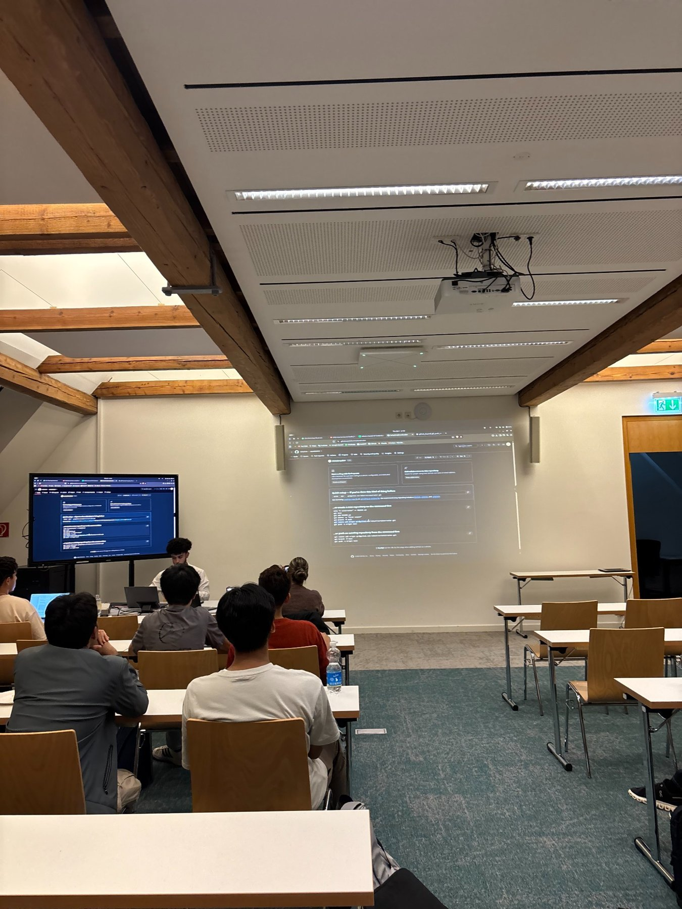
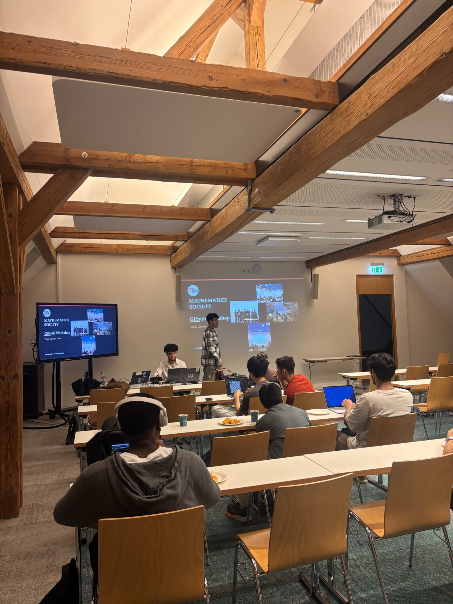
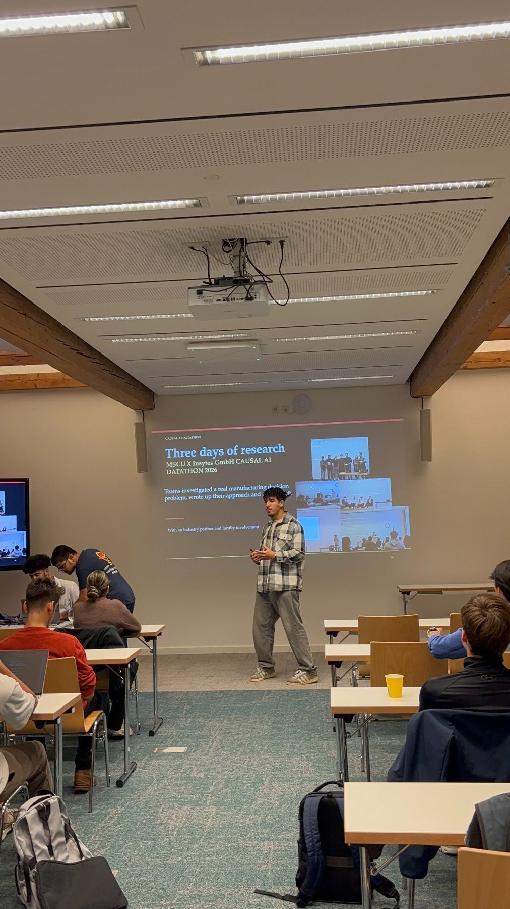
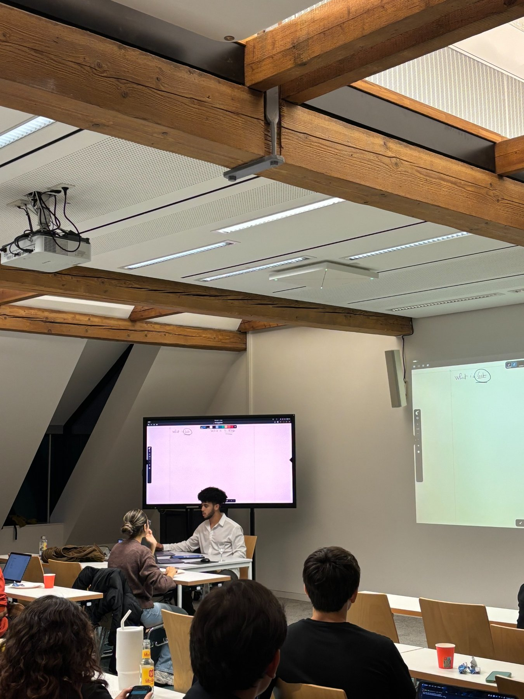
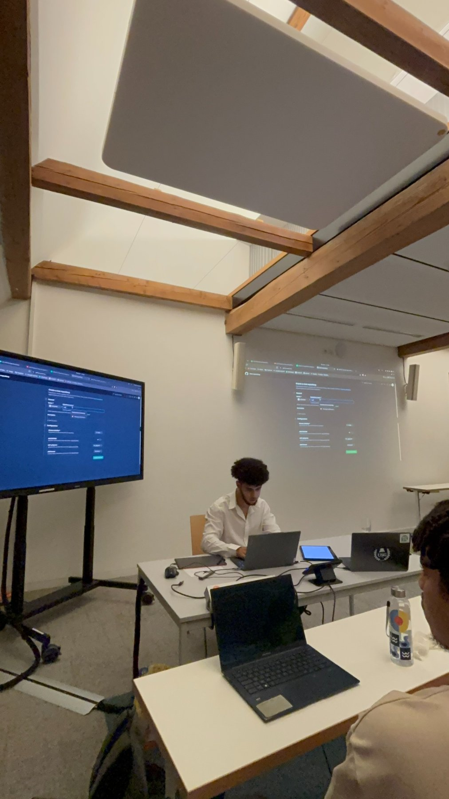
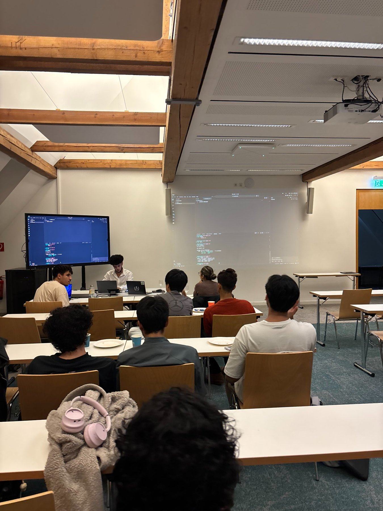

THE MATH SOCIETY · CONSTRUCTOR UNIVERSITY
GitHub Workshop
An introductory, hands-on workshop exploring Git, GitHub, version control and collaborative software development.

Learning Git and GitHub together
The Math Society hosted a beginner-friendly GitHub workshop designed to help students build confidence with version control. Led by a third-year Computer Science student from the society’s audiovisual team, the session walked participants through a practical project, from creating a local repository to collaborating through GitHub.
The workshop began with the difference between Git, a distributed version-control tool, and GitHub, a platform for hosting repositories and collaborating on code.
What we explored
Getting started
Initializing repositories, checking changes, staging files, making commits and writing useful commit messages.
Sharing projects
Creating a GitHub repository, connecting a remote, pushing work, cloning repositories and pulling updates.
Working as a team
Using branches to develop features independently, reviewing pull requests and merging contributions.
Managing changes
Exploring commit history, cherry-picking, ignoring files, unstaging changes and understanding reset options.
From demonstration to discussion
Through a live demonstration, attendees saw how version control supports real-world teamwork and how to recover from mistakes. The workshop also covered practical questions about SSH versus HTTPS authentication, avoiding unwanted files in repositories and why learning Git fundamentals remains valuable alongside AI coding tools.
Moments from the workshop





Watch the GitHub Workshop
Prefer YouTube? Watch the full recording on YouTube.
Connect with us
Have a question or want to join our next event? Stay in touch with the Math Society.